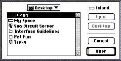

|
Standard File Dialog BoxesThe standard file dialog boxes allow users to operate on files located on some type of storage media, such as a hard disk, floppy disk, or file server; users can perform such tasks as viewing the files on a hard disk, opening and saving a document, and viewing elements on the desktop. Standard dialog boxes are commonly called directory dialog boxes in user documentation because they offer a directory listing of files available on storage media. Users can navigate through the levels of folders they have created and they can navigate to other storage media. The standard file dialog boxes show a file's position in relation to the disk it's stored on. The desktop appears as the top level of the hierarchical file system. The user clicks the Desktop button to get to the top level of the hierarchy to see what storage media are currently mounted and available. A user can view and select storage media from the standard file dialog box, but can see other desktop entities such as the Trash folder. The dialog box that appears when the user chooses Save As includes a New Folder button that allows the user to create a folder in which to store the document.If you don't use the default dialog boxes that the system software provides for opening files and saving files, you should at least replicate the organization and appearance of the standard file dialog boxes. Figure 6-24 shows an example of the standard file dialog box for opening files. For more information, see Inside Macintosh: Files. Figure 6-24 The standard file dialog box for opening files  |